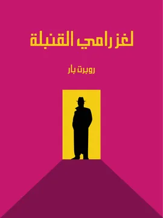

لغز رامي القنبلة

قراءة عربية أصلية محددة النطاق في الصفحات 9 إلى 14 من ملف PDF المرتبط، وليست تلخيصا كاملا للكتاب. نناقش ما تدعمه هذه المقاطع فقط.
أضحوكة أوروبا وأمريكا
يعترف الراوي، المحقق الفرنسي المطرود، بأنه طرد من عمله دون سابق إنذار؛ قد يقال إن ذلك كان بسبب فشله في قضية قلادة الملكة، لكنه يقرر أنه تتبع الخيط البحثي الصحيح الذي كان أمامه، وأن النتيجة وإن لم تكن متوافقة مع المنطق كانت متوافقة مع الحقائق. لا، لم يطرد لأنه فشل؛ بل طرد لأنه جعل فرنسا في ذلك الوقت أضحوكة أوروبا وأمريكا، فقد استغنت فرنسا عن خدماته لأنها أصبحت محط سخرية الجميع. ويعرض خدماته على المفتش ستانديش في سكوتلاند يارد: بدا المفتش في أكثر حالاته المزاجية لطفًا حين مثل بين يديه، بالرغم من أن مأساة متنزه جرينيتش كان يتردد صداها في جميع أنحاء لندن دون أن يكون لدى الشرطة أدنى فكرة عن الجريمة أو مرتكبها. استشف من ابتسامة المفتش الكريمة أنه أنفع له بعض الشيء، فاستخدم العديد من الإيماءات التي بدت عديمة المعنى وهو يتحدث إليه، بينما كان رأس المفتش منكبًا على دفتر ملاحظاته لا يستمع إليه فعليًا، حتى إذا انتهى من كلامه استمر في الكتابة كما كان يفعل قبل ذلك؛ ليكتشف الراوي أنه بالغ في تقدير مكانته لدى الشرطي، وفي قبضته المتهم الإيطالي.
زاوية وحدود القراءة
قراءة موجزة من ص ٩ إلى ص ١٤ من أصل ٤٦ صفحة، تعرض مطلع اللغز، لا الكتاب كاملًا.
الطبعة والقراءة
هذه الترجمة العربية صادرة ومتاحة مجانًا من مؤسسة هنداوي بشكل قانوني؛ حيث إن نص العمل الأصلي يقع في نطاق الملكية العامة تبعًا لقوانين الملكية الفكرية.
تنزيل PDF المجاني ↓ القراءة والمصدر الرسمي ↗